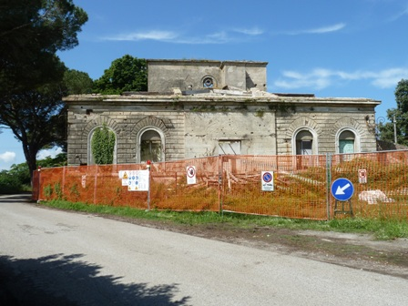

Ma cosa sono l'Ondina e Coltano? Riguarderà roba vecchia di sicuro, dirà qualcuno che capita non per la prima volta su questo blog.
Sì, roba vecchia, roba di storia.
Nei post n. 246/7/8 pubblicai, da appassionato di spedizioni polari, qualche riflessione sulla vicenda della Tenda rossa di Nobile del 1928 (link); poco tempo fa passando da La Spezia sono andato a rivedermi al Museo Tecnico Navale la radio protagonista della conclusione felice della mezza tragedia, appunto il trasmettitore Ondina 33.
(Perchè 33? 33 sono i metri di lunghezza d'onda usata da questo apparecchio nella spedizione, pari a 9090 KHz).
Vedere dal vivo un oggetto mitico (qualunque esso sia, per un appassionato ad un argomento) è sempre una gran cosa.
L'Ondina in pratica è una anonima bruttina scatolotta di legno scuro, con qualche milliamperometro e qualche manopola sul frontale, un oggetto che "se non se ne conosce la storia" non fa certo soffermare un frettoloso visitatore del bel museo.
La mia fotografia, senza illuminazione e piena di riflessi ineliminabili dal vetro di protezione, è una delle peggiori che ho mai fatto... tuttavia eccola l'Ondina originale!
Protagonista di un frammento della storia d'Italia oggi praticamente sconosciuto, ma che ai tempi di mia nonna (ricordo che ne parlava) suscitò enorme scalpore, ammirazione e apprensione internazionale.
Altri tempi.

[A proposito del Museo: encomiabile l'iniziativa della Marina Militare di renderne praticamente gratuita la visita, devolvendo la simbolica cifra di un euro e mezzo all'Istituto Doria che fornisce assistenza ai figli dei marinai caduti].
...°°°OOO°°°...
E Coltano? Cos'è?
Coltano è una piccola località nella pianura sud pisana, oggi conosciuta solo dai pochi che gravitano in quella zona ma un tempo centro di importanza nazionale, da cui si lanciavano reti che avviluppavano il mondo intero.
Parlo ancora di radio e le reti sono quelle onde elettromagnetiche che con opportune condizioni arrivano dovunque.
Sempre navigando nel Gran Mare si trovano anche per Coltano tutte le notizie che si vogliono (per esempio su Wiki, link) e ne parlo qui perchè, girovagando per questa parte della Toscana, ho voluto sincerarmi di persona in quale stato di vergognoso degrado versi ancora la stazione marconiana che fu il principale centro radio italiano intercontinentale degli anni '30.
Un altro cimelio storico nazionale lasciato da decenni in totale abbandono, del quale si continua a parlare di "recupero" ma che alla data di questo post la palazzina Marconi si trovava come si vede in questa tristissima foto.

Essendo abituato da una vita "ad andare un po' in giro" anche fuori d'Italia, mi rammarico ancora di più perchè vedo com'è trattato e custodito il patrimonio storico-culturale in tanti altri Paesi, che ne fanno giusto orgoglio nazionale ed anche fonte di entrata economica (e magari si tratta di cose molto più piccole delle nostre) ma salvaguardate da una politica seria.
Se si potesse dar via metà del nostro patrimonio culturale scambiandolo con altrettanto buon senso ci si guadagnerebbe, e anche parecchio.